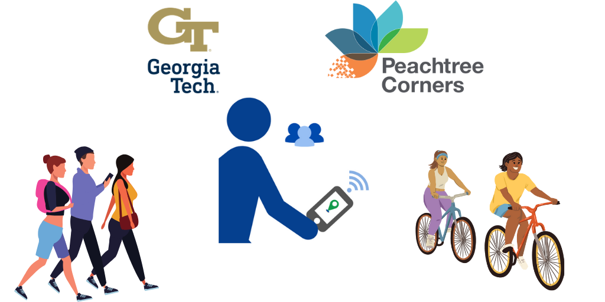
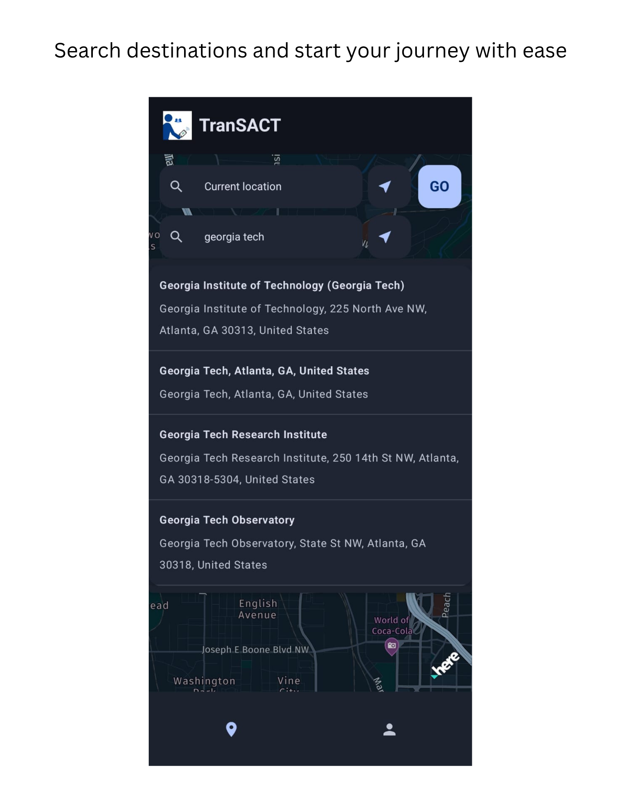
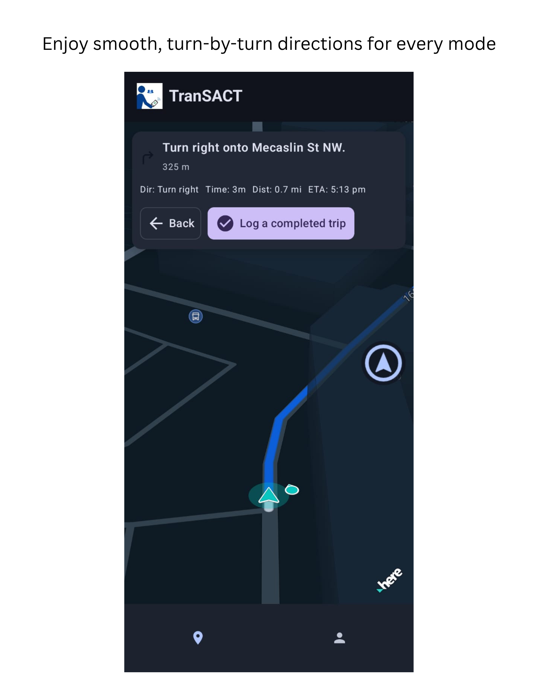
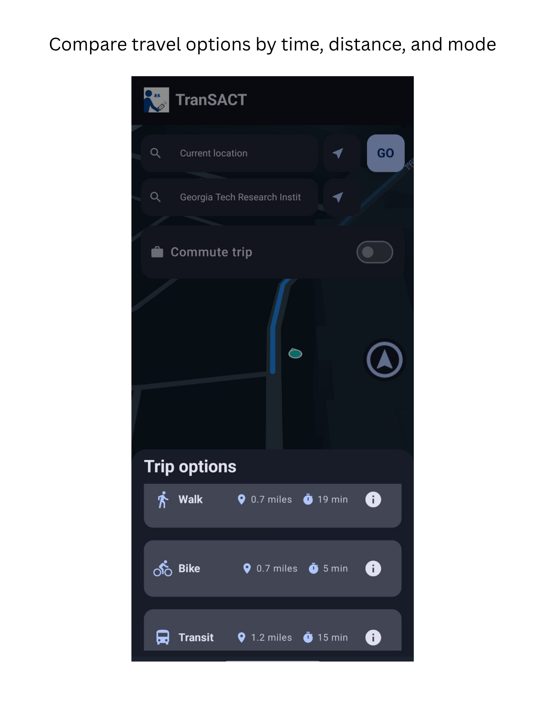
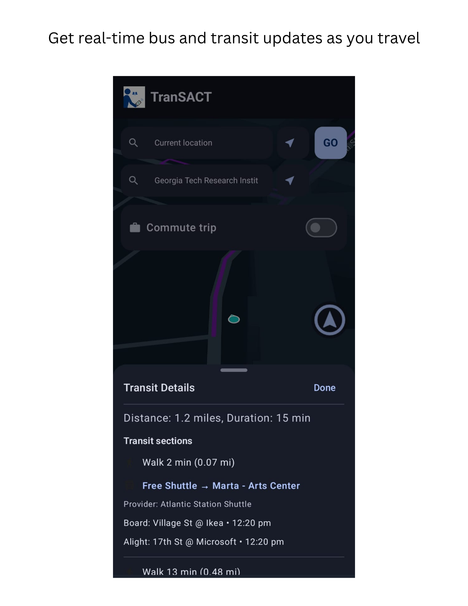
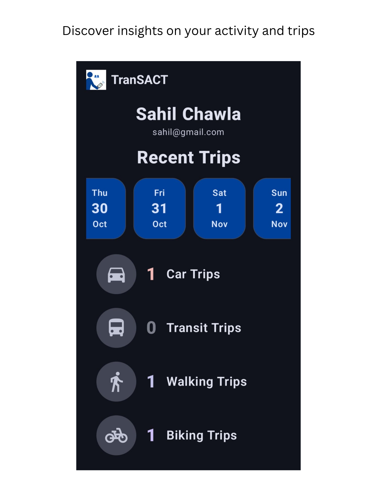
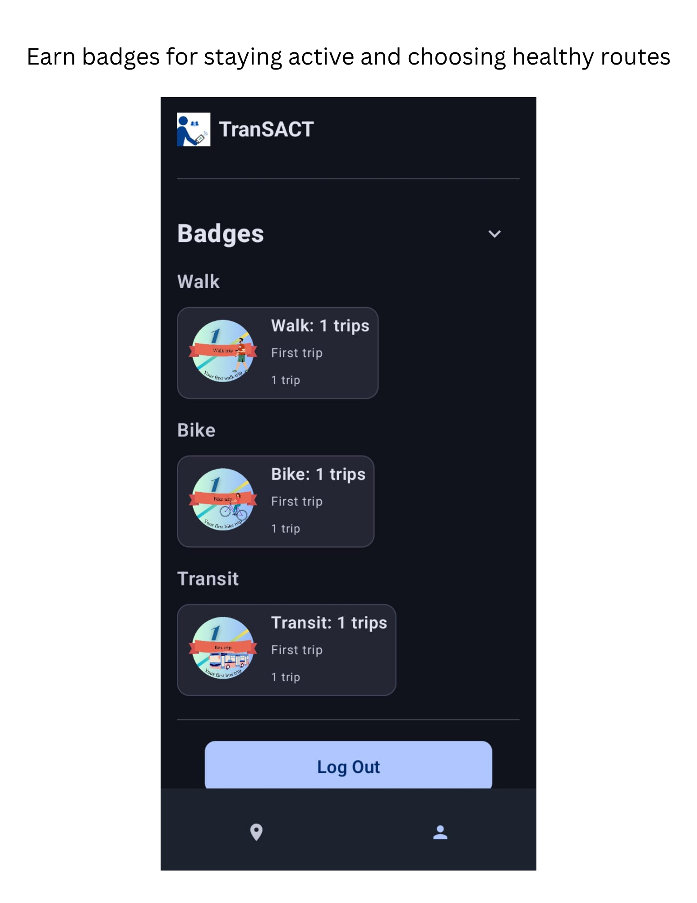

Projects
A selection spanning apps, ML models, experiments, and optimization.
Field Experiment to Test Behavioral Interventions (TranSACT)
Advisor: Dr. Srinivas Peeta
Design and deployment of an at-scale randomized field experiment using the TranSACT mobile app in Peachtree Corners, GA.
- Planning a 12-week deployment with 300 participants in the City of Peachtree Corners, GA.
- Testing combinations of real-time rewards, gamification, and health-based messaging.
- Quantifying mode shifts via emissions avoided, calories burned, and air quality metrics.
Bi-Level Network Optimization for Behavioral Intervention Design
Advisor: Dr. Srinivas Peeta
Optimization framework allocating monetary & non-monetary interventions to improve system-level outcomes.
- Formulated a bi-level optimization problem responsive to traveler behavior.
- Implemented Particle Swarm Optimization (PSO) for a 12,124-variable search space.
- Numerical experiments show ~20% emissions reduction under optimal strategies.
SUMO-Based Dynamic, Personalized Intervention Design
Advisor: Dr. Srinivas Peeta
Reinforcement learning framework to deploy interventions in real time based on traffic and user states.
- Designed DDPG-based agent in SUMO to deliver interventions every 15 minutes.
- Integrated traffic flow, congestion, and user features for personalization.
- Python-based simulations across app penetration and congestion scenarios.
- Observed ~15% traffic efficiency gains and ~25% CO2 reduction in numerical experiments.
TranSACT Mobile App
TranSACT is a native mobile application developed as part of Georgia Tech’s Smart & Connected Communities (SCC-IT) project . The app supports the Peachtree Corners community travel study by delivering real-time, personalized travel interventions and collecting high-resolution mobility data from residents as they walk, bike, take transit, or drive.







- Platforms: Native iOS (Swift / SwiftUI) and Android (Kotlin / Jetpack Compose) apps built with a shared navigation and intervention design.
- Mapping & Routing: Integrated HERE SDK for multimodal routing (walk, bike, transit, car), address and POI search, and turn-by-turn navigation with live map tiles.
- Backend & Data: Firebase (Firestore, Authentication, Cloud Functions, Cloud Messaging, Storage) for user management, trip logging, and real-time intervention delivery, with streaming exports to BigQuery and Python analytics pipelines.
- Experiment Engine: In-app randomized experiments that deliver health- and emissions-based informational messages, badges, and leaderboards; treatments controlled remotely via configuration and experiment flags.
- Telemetry: Second-by-second GPS traces, mode-specific trips, and usage events linked with survey data to support causal inference, behavioral modeling, and network-level optimization studies.
- Deployment: Field-tested with Peachtree Corners residents as part of the SCC-IT community study, supporting large-scale, real-time behavioral experiments in a live suburban network.
Testing Behavioral Interventions Using Online Surveys
Advisors: Dr. Omar I. Asensio, Dr. Srinivas Peeta
Designed and evaluated a large portfolio of non-priced intervention mechanisms to encourage shifts away from private-car use.
- Designed & implemented 50+ non-priced interventions (social norms messaging, environmental impact visualizations, etc.).
- Ran RCTs on Qualtrics with 10,000+ U.S. participants to test effectiveness.
- Analyzed outcomes via multivariate regression and structural equation modeling to estimate behavioral shifts.
- Conducted community workshops to validate results and refine mechanisms.
Travel Mode Classification Using Transfer Learning
Deep learning pipeline for second-by-second GPS trajectories with transfer learning and temporal modeling.
- Leveraged pre-trained models (e.g., ResNet) for feature extraction; temporal modeling via LSTM.
- Fine-tuned on 500k labeled trajectories across walk, bike, and transit.
- Achieved 85%+ classification accuracy with spatiotemporal features.
- Automated pipeline in Python using TensorFlow and scikit-learn for near real-time detection.
Driving Simulator Analysis of AV Infrastructure Impacts
Advisor: Dr. Srinivas Peeta
Human-in-the-loop experiments to understand how AV-specific infrastructure influences cognition and safety.
- High-fidelity simulator using the Curiosity Lab test track digital twin.
- Collected eye-tracking, heart rate, and behavioral data to evaluate cognitive load and responses.
- Analyzed human–AV interaction data in Python; informed infrastructure design recommendations.
Fleet Management for Large-Scale Autonomous Vehicle Operations
Advisor: Dr. Srinivas Peeta
Algorithms to improve AV fleet utilization under dynamic demand and congestion.
- Built SUMO-based simulations for dynamic routing and fleet management.
- Developed real-time re-routing based on traffic and ride demand.
- Validated on the University of Tennessee, Chattanooga test track.
- Achieved ~30% fleet utilization improvement and ~20% reduction in idle time at peaks.